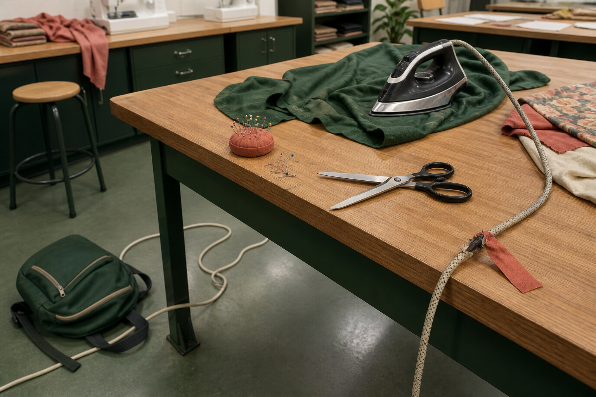
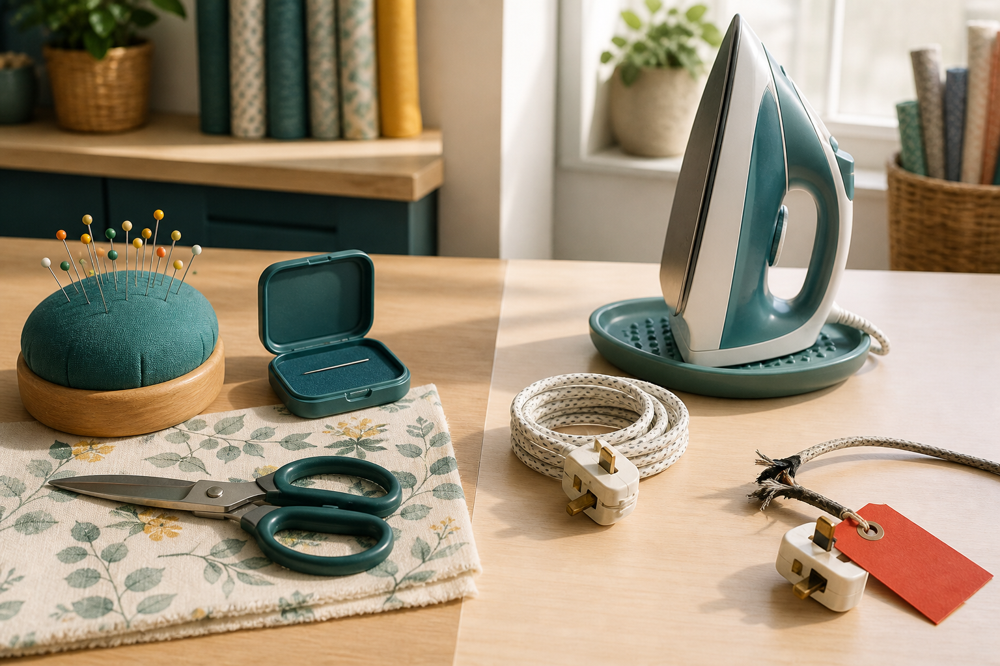

Section 1
Recognising Textile-Room Hazards
Learning purpose: Develop a repeatable scan–assess–control–report routine for hazards without replacing teacher instructions or local procedures.
Safe practical work begins before a tool is touched. A hazard is something with the potential to cause harm; risk considers how likely that harm is and how serious it could be in the current situation.
Textile rooms combine sharp objects, heat, electricity, moving machine parts, loose materials and people sharing space. A dropped pin, damaged lead or bag in a walkway may seem small, but the surrounding activity can turn it into a serious problem. Good scanning includes the floor, bench, tool, material and people nearby.
A useful routine is scan, assess, control and report. First notice what is different or unsafe. Next consider who could be harmed and how. Stop the activity, keep others clear and use only a control you have been taught and authorised to use. Report the issue so the teacher can check it before work continues.
Controls should address the source of danger where possible. Removing clutter from an agreed walkway is stronger than merely telling people to step around it. Isolating a damaged electrical tool from use and reporting it is stronger than continuing more carefully.
Safety is active and shared, but it is not permission to repair unfamiliar equipment. Students follow teacher instructions, communicate clearly and restart only when the area and equipment have been confirmed safe. Near misses are worth reporting because they reveal conditions that could cause harm next time.
Key vocabulary
- hazard
- Something with the potential to cause harm.
- risk
- The combination of how likely harm is and how serious it could be in a situation.
- control
- An action or condition that reduces exposure to a hazard.
- isolate
- Keep people from using or approaching a hazardous item or area.
- near miss
- An event that did not cause harm but could have under slightly different conditions.
A damaged power lead is noticed before sewing
- Stop before connecting or using the equipment.
- Keep the tool unavailable to others without handling the damaged area.
- Tell the teacher exactly what was observed and where.
- Use the equipment only after the teacher has checked and cleared the situation.
Conclusion: The response controls exposure and reports the source instead of relying on extra care around damaged equipment.
Ideas to challenge
- A hazard matters only after someone is injured.
- Being careful is always an adequate control for damaged equipment.
Hazard and risk
Name what can cause harm, then consider likelihood, possible consequence and who is exposed.
Scan, assess, control, report
Use the four-step routine before restarting; only apply controls you have been taught and authorised to use.
Control the source
Keeping people away from a damaged or unsafe source is stronger than asking them to work around it more carefully.

Complete non-video pathway
Thirty-second safety scan
A realistic still scene supports repeated scanning and hazard reasoning while the teacher controls the authorised response.
Before
- Read the distinction between hazard and risk and the scan–assess–control–report routine.
- Wait for your teacher to identify the safe unoccupied zone, or use the supplied room-scene visual.
During
- Scan floor and walkways.
- Scan bench, tools and electrical leads.
- Scan materials, sharp items and heat zones.
- Name the hazard, possible harm and safest next authorised action to the teacher.
After
- Record one hazard–harm–authorised-action chain.
- Do not touch, repair or restart unfamiliar equipment; report the issue and await teacher direction.
Evidence to keep: One correctly prioritised hazard report with an authorised next action.
Check, apply and save evidence0/10 + response
Answer all ten checks. Feedback appears after each choice, so use it to revisit the linked theory before continuing.
Higher-order response
Explain your thinking
Apply the scan–assess–control–report routine to a textiles-room scenario containing a blocked walkway, an unaccounted sharp item and a damaged electrical lead. Prioritise your response and justify it.
Build your response
- Identify each hazard and the harm it could cause.
- Compare likelihood, consequence and who is exposed.
- Sequence only actions a student is trained and authorised to take.
- Explain what must be reported and what must be confirmed before restarting.
Success looks like
- Distinguishes hazards from contextual risk.
- Prioritises source control, clear reporting and authorised restart.
Nothing saved yet.
Resume this packageSection 2
Safe Use of Needles, Scissors and Irons
Learning purpose: Connect the form and energy of common textiles tools to specific safe handling decisions.
Needles, scissors and irons are useful because they concentrate force or heat. The same feature that makes each tool effective can cause harm, so safe use is built into preparation, handling, placement and pack-up.
Pins and needles make small, precise punctures. Count or account for sharps as you work, keep them in the classroom's demonstrated storage system and never hold them in your mouth. If one is lost or damaged, stop and tell the teacher rather than sweeping a hand across fabric or the floor.
Scissors cut because two sharp blades move past each other. Use the approved scissors for the material, keep the cutting zone clear and cut on a stable surface. When carrying scissors, close the blades, hold them point-down and walk without rushing. Pass them using the demonstrated safe method.
An iron combines heat, weight and electricity. Work only with permission and the demonstrated setup. Keep hands dry, check the fabric before applying heat, keep the cord and hot surface controlled, and return the iron to its approved resting position whenever you pause. A damaged cord or uncertain fabric response means stop and ask.
Safe pack-up is part of the task. Account for sharp items, place tools in their assigned locations, leave heat equipment as directed and clear offcuts from the workspace. Do not improvise disposal or electrical procedures; use the process demonstrated for the room.
Key vocabulary
- sharp
- An item with an edge or point capable of cutting or puncturing.
- cutting zone
- The clear area where blades and material move during a cut.
- heat transfer
- Movement of thermal energy from a hotter object to a cooler material.
- resting position
- The approved stable position used when a heat tool is not moving over fabric.
A pin cannot be found after fitting fabric
- Stop handling the fabric and tell people nearby not to sweep or sit in the area.
- Report the missing sharp item to the teacher.
- Follow the teacher's directed search method without using bare hands blindly.
- Resume only when the teacher has resolved the missing-sharp issue.
Conclusion: The response protects hands and nearby students while keeping control of the search.
Ideas to challenge
- Pins are safe to hold in the mouth because they are small.
- An iron is safe whenever its hot surface is not touching fabric.
Control points and blades
Account for pins and needles; keep scissors closed, point-down when carried and within a clear cutting zone.
Control heat and electricity
Use an iron only as demonstrated, with dry hands, checked fabric, a controlled cord and the approved resting position.
Stop for uncertainty
A missing sharp, damaged cord or uncertain material response requires a pause and teacher direction, not improvisation.

Complete non-video pathway
Tool movement rehearsal
Students explicitly connect each tool's useful action to its hazard and safe handling sequence without activating equipment.
Before
- Read the adjacent needle, scissors and iron safety explanation.
- Study the close-up safe-zone panels and keep all equipment unpowered and materials uncut.
During
- Identify the point, blade, heat or electrical hazard.
- Show where hands, tool and material would be positioned.
- State the stop condition for that tool.
- Explain the final storage or teacher-directed pack-up step.
After
- Ask the teacher to correct the narrated sequence before practical use.
- Record one safe-handling decision and the hazard it controls.
Evidence to keep: A teacher-checkable narrated sequence and one hazard-control explanation.
Check, apply and save evidence0/10 + response
Answer all ten checks. Feedback appears after each choice, so use it to revisit the linked theory before continuing.
Higher-order response
Explain your thinking
Compare the hazard-control needs of a needle, scissors and an iron. Explain how preparation, use, pausing and pack-up should change for each tool.
Build your response
- Identify the useful feature and matching hazard of each tool.
- Describe how hand position and workspace control differ.
- Name a stop-and-report condition for each tool.
- Explain how safe pack-up prevents later exposure.
Success looks like
- Uses tool-specific reasoning rather than a generic 'be careful' statement.
- Covers the complete use cycle and routes uncertainty to the teacher.
Nothing saved yet.
Resume this packageSection 3
Selecting and Justifying Textile Tools
Learning purpose: Teach students to justify an approved tool choice by connecting task, material, precision, quality and safe control.
Selecting a tool is a design decision. The best choice is not automatically the fastest or most powerful; it is the approved tool that can perform the required action accurately, safely and without unnecessary damage to the material.
Begin with the action: measuring, marking, holding, cutting, removing stitches, pressing or joining. Then consider the material's thickness, surface and structure. A tool that works on one textile may stretch, crush, snag or mark another.
Quality requirements shape selection. Precise measurement needs a clear reference and a suitable measuring tool. Controlled cutting needs blades intended for the material and enough stable space. Temporary holding may use an approved method that keeps layers aligned without creating avoidable damage.
Safety and condition are selection criteria. Use only tools demonstrated and approved for the task. Check that the tool is complete, undamaged and suited to the user's level of control. If a choice requires an unfamiliar technique or the material behaves unexpectedly, pause and ask before continuing.
A justification has three linked parts: name the task, explain why the tool's function suits the material, and state how it supports quality and safe control. A test on a suitable offcut can strengthen the decision before the final material is changed.
Key vocabulary
- tool
- An implement used to carry out a controlled action on a material or product.
- precision
- The degree of control and consistency in position, size or action.
- offcut
- A spare piece of the project material suitable for testing.
- justify
- Support a decision with relevant reasons and evidence.
Choosing how to test a mark before final cutting
- Identify the action: create a visible construction guide that should not damage the final surface.
- Check which marking tools have been approved and demonstrated for the actual fabric.
- Test the likely tool on an offcut and check visibility, control and removal behaviour.
- Choose and justify the method that produces a clear guide with the least unwanted effect.
Conclusion: The tool is chosen through task and material evidence, not because it was closest on the bench.
Ideas to challenge
- The fastest tool is always the best tool.
- A tool used successfully on one fabric will behave identically on every fabric.
Start with the action
Define whether you need to measure, mark, hold, cut, remove, press or join before naming a tool.
Match tool and material
Consider thickness, surface, structure and possible damage; use an offcut to test when appropriate.
Justify quality and control
Explain how the approved, undamaged tool supports precision, finish quality and safe handling for this task.
Complete non-video pathway
Tool-choice conference
Comparing approved local tools against one task and material produces the same evidence-led selection decision.
Before
- Read the task–material–quality–safety reasoning chain.
- Choose one sample task and identify only tools the teacher has approved.
During
- State the exact action and desired quality.
- Describe the material feature that affects selection.
- Compare two approved choices and identify a trade-off.
- Propose a safe offcut test and make a justified selection.
After
- Record the chosen tool, evidence and one rejected alternative.
- Obtain teacher permission before testing or touching final material.
Evidence to keep: One justified tool decision with a safe offcut-test proposal.
Check, apply and save evidence0/10 + response
Answer all ten checks. Feedback appears after each choice, so use it to revisit the linked theory before continuing.
Higher-order response
Explain your thinking
Justify a set of approved tools for measuring, temporarily holding, cutting and pressing a textile component. Explain how the material and required finish influence each choice.
Build your response
- Define each action and its quality requirement.
- Describe the material features that could affect tool behaviour.
- Compare at least one alternative or trade-off for two actions.
- Propose offcut checks and safe-control steps before final use.
Success looks like
- Links each tool to task, material and finish evidence.
- Includes approval, condition, testing and safe-control reasoning.
Nothing saved yet.
Resume this packageModule review
Three sections, one connected idea
Use these direct links to reopen any incomplete package. A section counts when all ten checks and a substantive long response are saved.